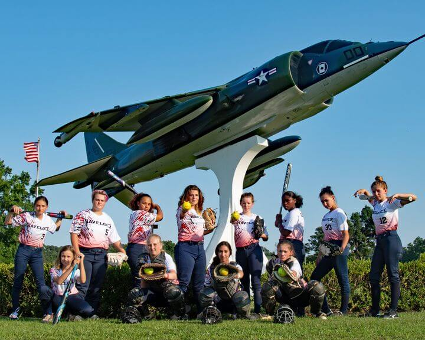

.png)
The History of Havelock
Havelock has always welcomed visitors. The lovely woods, creeks and Neuse River welcomed some of the
earliest settlers in America. Our area boasted permanent plantation sites as early as 1707 and was home to
many woodsmen, fishermen and farmers before the American Revolution.
This area welcomed the coming of the railroad in 1858 at a time that a British general was gaining worldwide
fame for his heroic rescues of hostage citizens during a bloody uprising in India. When the Atlantic and
North Carolina tracks came to a crossroads and a depot was built, it needed a name. The local folks embraced
the name of General Henry Havelock for their budding community. Sir Henry was a devout Christian and a
military genius. The story of his courage gives inspiration to this day.
This City is one of eight in the world named for Sir Henry Havelock. Two are in Canada; three are in the
United States. There is one Havelock in Swaziland of Southern Africa and two in New Zealand. There is
also an island named for him in the Indian Ocean.
The town of Havelock Station saw action during the Civil War when elements of the Rhode Island Heavy
Artillery under the command of General Ambrose Burnside stormed ashore on the beach of what is now the
Officer’s Club at Cherry Point and Carolina Pines Golf & Country Club. The Union forces quickly took
control of the hamlet and its railroad depot using Havelock as a starting point for the capture of New Bern
and
Fort Macon. The operation in March 1862 provided the first major foothold in the South for the
Yankees.
The Union troops had few kind comments about the area, calling it desolate, snake-infested and muddy.
One correspondent said the only comfort for the soldiers was the “chain-lightning whiskey” available from
local stores and farm houses.
Wills and other records indicate that production of “naval store” such as tar and turpentine had more
economic impact here than did farming. While most people farmed, the greater income was produced through
the operation of turpentine distilleries and tar kilns.
With the advent of the steam engine during and following the Civil War, wooden ships began to be
replaced and the market for tar, pitch and turpentine collapsed. To make ends meet, more than a few local
families switched from turpentine distillation to the distillation of something with a little more kick to
it.
Local legend has it that Havelock and nearby Harlowe became renowned for the quality of their “moonshine”
and
that a few fortunes were based on the copper coil.
From the late 1800’s until the 1930’s, the Havelock area was a haven for hunters and fishermen.
Sportsmen came from all over the east coast to enjoy the river and forests. Several old-timers’ albums boast
photos of baseball stars Babe Ruth and Christie Mathewson and then-famous cartoonist Bud Fisher decked out
in
hunting gear in the local woods.
Havelock welcomed the United States Marine Corps in 1940. Today, visitors are often seen craning their
necks as a Harrier or Intruder streaks by overhead. Local residents are used to the roar acknowledged by a
sign near the base’s main gate which reads, “Pardon our noise. It’s the sound of freedom.”
If you would like more historical information about Havelock or New Bern, visit the author’s website at
edwardellis.com.
Current Demographics
According to the 2010 Census data, Havelock is the second most populous city in Craven
County, hosting
approximately 20,735 residents.
Havelock continues to be a growing community. This strong progressive community is dedicated to supporting
the mission of Cherry Point, while encouraging orderly growth and development.
Although the area was among the first settled in North Carolina, the official population in 1950 was 100.
The population in 1965 was about 3,500. Many of the city’s current residents are affiliated with the
adjacent Cherry Point Marine Corps Air Station.
Information and commentary are courtesy of Edward B. Ellis, Havelock’s Historian.
General Demographics
- 2020 population: 19,628
- Population density: 1,149 people per square mile.
- Average household income: $63,861
- Poverty rate of 11.97%
- Median rental cost: $1,006 per month
- Median house value: $138,500
- Median age in Havelock: 23.7 years 22.9 years for males, and 25.1 years for females
Ethnicity Demographics
- White: 67.15%
- Black or African American: 21.60%
- Two or more races: 4.48%
- Other race: 3.88%
- Asian: 2.06%
- Native American: 0.62%
- Native Hawaiian or Pacific Islander: 0.21%
For more information on our demographics please visit World Population Review.
The Latest
Our Girls Go To the World Series
The Havelock Girls Softball League 14U Team is World Series bound! The City of Havelock wishes the team luck as they head to the Babe Ruth World Series in Florida from July 18 - 27. Join the ... Continue
ECAHF Summer Camp
EASTERN NORTH CAROLINA ELEMENTARY SCHOOL ENGINEERING CAMP Havelock Tourist & Event Center July 19-23, 2021 The Eastern Carolina Aviation Heritage ...Continue
Mayor's Minute
The City of Havelock Mayor, Will Lewis, periodically posts updates and notifications to this page ...Continue